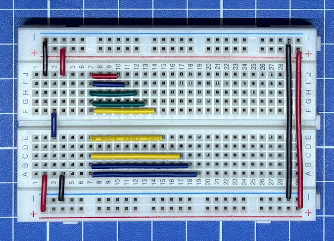

Wire bundle
Esta es sin duda la mejor forma de cablear un breadboard al no ser tan engorrosa y permitiendo observar bien el circuito, por lo que requiere más trabajo, pero no deja de ser mi favorita.

Materiales
- Cable opción 1: Hook-up Wire Spool Set - 22AWG Solid Core - 6 x 25 ft
- Cable opción 2: Hook-up Wire Spool Set - 22AWG Solid Core - 10 x 25ft
- Herramienta para pelar cables: Knipex 12-80-040 SB.
- Pinsa para cortar cables: NS-04
- Pinsa para doblar cables: PS-03
Medidas
Esta es una lista de medidas para construir tus propios cables, donde te indico el largo total de cada cable que esta compuesto por la suma de; el largo entre punto y punto del breadboard y los extremos que hay que pelar que serán usados cómo pines (0,6cm)x2.
- Puntos: 2 = 0,3cm + (0,6cm)x2 = 1,5cm
- Puntos: 3 = 0,5cm + (0,6cm)x2 = 1,7cm
- Puntos: 4 = 0,7cm + (0,6cm)x2 = 1,9cm
- Puntos: 5 = 1,0cm + (0,6cm)x2 = 2,2cm
- Puntos: 6 = 1,2cm + (0,6cm)x2 = 2,4cm
- Puntos: 7 = 1,5cm + (0,6cm)x2 = 2,7cm
- Puntos: 8 = 1,7cm + (0,6cm)x2 = 2,9cm
- Puntos: 9 = 2,0cm + (0,6cm)x2 = 3,2cm
- Puntos: 10 = 2,2cm + (0,6cm)x2 = 3,4cm